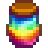

Prismatisches Gelee
| Prismatisches Gelee | |
|  | |
| Gelee, geerntet aus dem seltenen und schwer fassbaren Prismenschleim. | |
| Information | |
| Quelle | Prismatischer Schleim (100% Beute) |
| Verkaufspreis | Unverkäuflich |
Prismatisches Gelee wird immer als Beute erhalten, nachdem ein Prismenschleim getötet wurde. Diese sind nur während des Spezialauftrages Prismatisches Gelee verfügbar.
Mehrere Gelees können gefunden werden, entweder indem ein weiterer Prismatischer Schleim aufgesucht wird bevor die Quest abgeschlossen wird, oder als doppelte Beute eines einzigen Schleims wenn ein Ring des Diebes getragen wird.
Während die Quest aktiv ist, ist statistisch gesehen 1 von 83 Schleimen ein Prismatischer Schleim. Das bedeutet ein Gewöhnlicher Schleim kann zu ca. 1,2% Wahrscheinlichkeit durch einen Prismatischen Schleim ersetzt werden.
Tipp
Um den prismatischen Schleim schneller zu finden empfiehlt es sich mit dem Aufzug zwischen den Etagen zu fahren. Nimmt man nur die Etagen mit einer 5 am Ende kann man direkt auf der Etage wieder in den Aufzug einsteigen.
Vorgehensweise: Man fährt mit dem Aufzug auf Etage 5, schaut sich dort um. Falls man keinen prismatischen Schleim entdecken kann (er wechselt immer die Farbe), steigt man in den Aufzug wieder ein und fährt zu Etage 15. Das wiederholt man bis Etage 115 und startet dann wieder mit Etage 5.